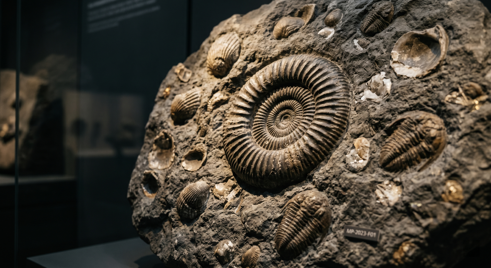
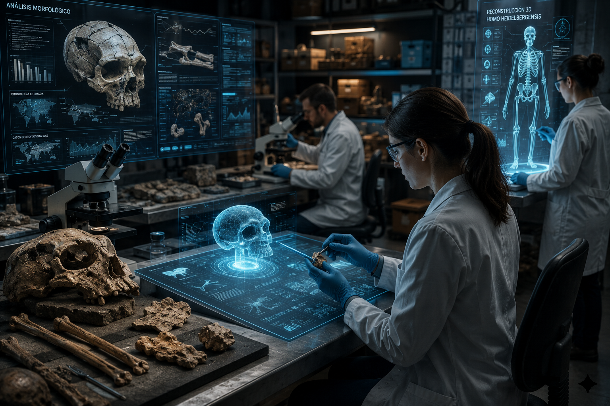
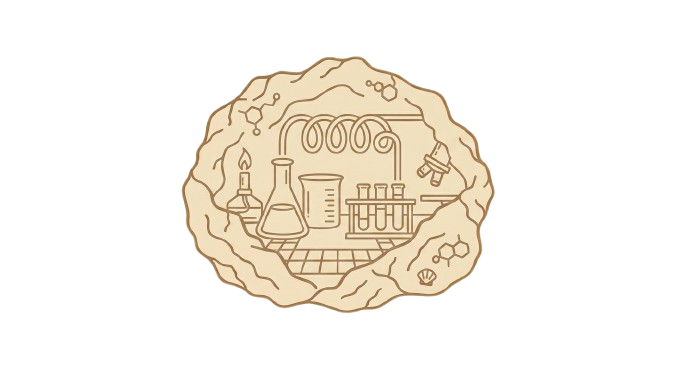

Tierra primitiva
Desde mares tibios hasta rocas en formación: un viaje que cobra vida con texturas y brillo suave.
Centro de Interpretación Paleomágina
Recorre millones de años de historia geologica y humana con una experiencia conectada por QR, recursos interactivos y ciencia basada en evidencias.
Comenzar recorrido Introducción
Introducción

Siente cómo el paisaje cambia a cada hora y descubre escenas de tiempo profundo que emergen en movimiento.

Desde mares tibios hasta rocas en formación: un viaje que cobra vida con texturas y brillo suave.

Ritmos humanos y reliquias en movimiento, con efectos de luz que acompañan cada etapa.

Un vistazo al Antropoceno en el que la naturaleza y la tecnología se cruzan en una escena dinámica.

ContactoEscribenos para organizar visitas escolares, actividades en grupo y colaboraciones cientificas.
Escanea para abrir la pagina principal del proyecto.